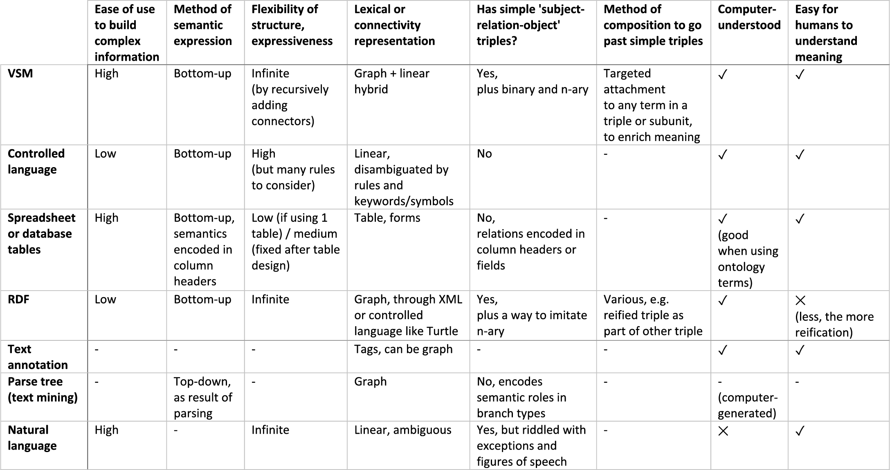

5. Discussion
i. Novelty
VSM is an entirely new and simplified approach for representing and capturing knowledge. It makes it easier for curators to make the shift from thinking in natural language to formulating in structured statements. We described how to build VSM-sentences: diverse statements that can contain highly contextualized information, yet in a form that is both easily readable by humans and meaningfully processable by algorithms. VSM-terms enable a user to disambiguate concepts with the help of ontologies and identifiers. VSM-connectors enable a user to disambiguate the internal structure of information, and support a uniform and intuitive method for creating statements with full structural transparency. Tridents, bidents, and lists cover many use cases; coreferences support also specialized cases. The three VSM Principles > provide conceptual descriptions for working with terms and connectors. Templates make VSM as easy as filling out spreadsheets or forms, or easier because of autocomplete and CV support. Some additional features make VSM even more expressive.
VSM thus forms a bridge between computers and human understanding. This forms the foundation for precise computational comprehension and meaningful processing of extremely diverse, human-readable quasi-sentences. It provides a solution to a long-standing problem for curation in the biosciences, and likely beyond.
VSM is most closely related to: controlled languages, RDF, and form-based entry methods. Table 1 compares VSM with several knowledge representation or analysis methods, on aspects like ease-of-use and semantic internals. Figure 10 details a further comparison with RDF.

Table 1. Comparison of VSM with other knowledge representation methods. – VSM is a knowledge representation and entry method, most closely related to controlled languages, table-based entry methods, and RDF. – VSM differs from controlled languages: it replaces their many fixed rules by just a few connector types, and it replaces their fixed keywords and symbols by an approach that treats all VSM-terms equivalently (Principle 2). VSM supports synonymous word forms for readability, it places all expressed meaning into terms alone, and it uses elementary connector types that enable structural consistency (Fig. 10). – Table-based entry methods are easy to use but poor on inherent semantics. VSM-templates copy their ease-of-use, but provide seamless extensibility, immediate clarity of how terms relate, and ontology-ID lookup. – RDF (Resource Description Framework) achieves high expressivity through triples which are also present in VSM. But while RDF is designed for IT experts, VSM is designed with a focus on usability for other scientific domain-experts as well: the biologist, chemist, etc. curator. Next to triples, VSM includes other basic units for grouping terms, and adds a view of semantics where terms are embedded in an own, local context (Principle 3). Both are essential for representing larger conceptual ideas as struc¬tured units of information, with both ease and clarity. – VSM is much less related to natural language tagging or analysis tools, despite its ability for resemblance to natural language (Principle 1). In particular, VSM should not be confused with text annotation (the tagging of entities and relations in free-text sentences, as how they appear in a paper), and VSM should not be confused with parse trees (generated by text-mining algorithms after top-down syntactic analysis of natural language; in contrast to bottom-up semantic knowledge construction with VSM).
Figure 10. Example conversion from VSM to RDF: a VSM-sentence is easier to understand than RDF. The VSM-sentence in (a) was manually converted to (b): a possible graph representation in RDF, using an example controlled-vocabulary “ex”. The relation “activates” is used as the subject of another triple and thus needs e.g. a reification construction in RDF. Here, both representations show the two distinct “device” concepts: one only located on the Moon and being activated but not yet exploding, the other one exploding as well. The bident-part “it explodes” needs to be expanded into a triple in RDF. The relation “ex:causes” could (as a choice) either connect the nodes “ex:activates” and “ex:belongs_to_class”, or connect their reified blank nodes. Note that RDF mixes together the supporting or primitive relations (“rdf:…”) and many (but not consistently all) relations that are part of the actual or expressed information (“ex:…”); while VSM keeps these apart as connectors and terms resp., which is a form of elegance. For most people, the VSM-sentence is much easier to read than the RDF graph.
ii. Continued implementation 1 Steps that we already took include: Design, prototype implementation, prototype application and iterative development based on user feedback; Redevelopment into a production-ready web component, incl. several supporting modules; Communication of the ideas around VSM, via this text among others.
To demonstrate our ideas for an interactive VSM UI, we first implemented a small prototype. We used it among others for creating figures with VSM-sentences in this text, and for interactive examples on accompanying web pages. Since then, we already rebuilt much of this work into well-designed software modules that can be reused in any curation project. These modules have a modern design that now supports community-based codevelopment of the many more possible features, and of supporting and downstream modules.2
The code is in the vsm organization on GitHub,
and all links to information and documentation are available at
vsm.github.io.
The most essential modules are:
vsm‑box,
vsm‑autocomplete, and
vsm‑dictionary
/‑to‑rdf
/‑local
/‑cacher.
A fully usable software suite should not only provide an interface for entering VSM-sentences, but also provide support for e.g. storing and querying them. Storage could be done in several ways: for instance as JSON-based graphs, or directly into a graph database. In addition, a VSM-to-RDF mapper that automatically produces RDF graphs (which was now done manually in Fig. 10) will have the advantage of making VSM-sentences readily queryable with SPARQL1 Prud, Eric, and Andy Seaborne. “SPARQL query language for RDF.” (2006). 3 A proposed direct conversion to RDF is already being developed in the module vsm-to-rdf. . Also, a tool for building queries that directly use VSM-connectors or VSM structures as graph patterns for querying, could help users avoid the complexity of RDF reifications.
iii. Initial adoption: use with templates
For curators. Learning new things always poses some sort of threshold. As a first introduction to VSM, a curation project could start off by having new curators use only templates. As most people are familiar with spreadsheets or forms, the use of VSM-templates does not require a steep learning curve: the curation process uses readable statements that are essentially self-explanatory as to what belongs in which empty field, and it is comfortably augmented with ontology lookup and term auto-completion. More experienced curators who encounter the need to capture information that goes beyond a template, may gradually venture into learning more about VSM and add and connect extra terms and structure. In a pilot curation project, we witnessed exactly this. Early adopters also appreciated VSM for ‘making the biological information’s inherent complexity much easier to handle’.
For IT experts. Templates are also a good start for being able to write queries in the standard way, which is: relying on a data-schema that specifies precisely what kind of information is available for querying. Still, as a curator captures information that exceeds the template (e.g. extra details about a protein), a query could return a term, plus its attached subgraph. This would be a VSM-fragment that is already conveniently human-readable. If a certain type of extension occurs often, queries could be updated to search specifically for that information too. So instead of having a data-format that dictates what curators may capture, VSM also enables a curator-driven process, where captured information may steer query development (and standardization) too. This prospect enables a shift of focus onto semantic preservation first, which may then guide or motivate for processing technology to catch up.
With the community. Templates may also be useful to ensure that captured information is readily translatable into other data formats. For example, we have been using templates in our pilot curation project, and these are helpful to export relevant parts of VSM-sentences and to contribute to established projects like GO Annotations and IntAct.2
• GOA: geneontology.org/page/go-annotations
• IntAct: www.ebi.ac.uk/intact
Furthermore, the user-friendliness of the interface could stimulate the design of dedicated templates for entry of knowledge into other formats like BioPAX, SBGN, SBML, or GO-CAM.3
• BioPAX: Wikipedia:BioPAX, biopax.org,
Demir E, et al: The BioPAX community standard for pathway data sharing (2010), Nature Biotechnology;
• SBGN: Wikipedia:SBGN, sbgn.org,
Le Novère N, et al: The Systems Biology Graphical Notation (2009), Nature Biotechnology;
• SBML: Wikipedia:SBML, sbml.org,
Hucka M, et al: The systems biology markup language (SBML): a medium for representation and exchange of biochemical network models (2003), Bioinformatics;
• GO-CAM: gocam-overview,
Thomas PD, et al: Gene Ontology Causal Activity Modeling (GO-CAM) moves beyond GO annotations to structured descriptions of biological functions and systems (2019), Nature Genetics.
Validity checks or constraints could accompany these templates to ensure compliance. Templates may also function as easy-to-conceptualize, unifying glue between different curation platforms’ particular representations.
With text-mining. When natural language processing (NLP) algorithms extract specific information types from literature, the resulting extracted facts could be automatically entered into associated VSM-templates. These draft VSM statements may then be curator-validated, corrected and/or extended. Alternatively, manually filled templates may serve as a training set for NLP. As an easy-to-use curation technology, VSM may engage more scientists in creating training data, and so accelerate a virtuous circle of curation/NLP co-improvement.
iv. From template-guided use toward full use of VSM
In order to move from templates to using VSM‘s full flexibility, there are some challenges to overcome.
Relation terms. The first challenge is how to deal with missing terms: while controlled vocabularies are typically incomplete, VSM has a particular need for terms and IDs for relation concepts, which may often not yet be available. A first solution would be to enable curators to build term lists for local use, which are then flagged as new entries that should be considered by ontology experts to be included in shared controlled vocabularies.
Paraphrasing. A second challenge relates to structural flexibility: there is freedom to express the same piece of information in multiple ways, with different levels of structural detail. For example, the single term “liver-cell” is equivalent to the more structurally transparent triple “cell in liver”, and both expressions will likely be entered by curators, especially when not guided by templates. This calls for mechanisms that can map structures with equivalent meaning, in order to retrieve all variants that semantically match a particular query. Still, this process will be less complicated than finding all variants that paraphrasing allows in natural language, as VSM presents the knowledge already in clearly defined graph structures.
Assistance. Swift and nimble curation with full VSM may be achieved with assistance tools. First, intelligent autocompletion may be trained, to suggest e.g. common prepositions after entered relations. Also, NLP techniques could suggest and add VSM-connectors. Ultimately, algorithms could suggest partial or full translations of free text (or figures) to VSM. This may be accelerated by compiling a set of VSM translations for common free-text phrases. In the long term, a VSM-sentence may serve as an interface to show how a machine understood a free-text sentence.
v. Potential scale of use
We envision that VSM will first be applied in new curation projects by scientists who would otherwise use spreadsheets or need to develop their own user interface. Such practical use-cases are instructive to inspire new ways forward. Another immediate application of VSM is to display various kinds of computationally generated, detailed knowledge in a human-manageable way. For instance, VSM may present: 1) the results of a text-mining scan over a text corpus; or 2) the detailed interpretation of what an algorithm understood from text (e.g. a scientific publication, or a social media post); or 3) a readable statement about a pattern detected in data by a machine learning or other algorithm, in a semantic form that could subsequently be queried or perhaps reasoned upon. This demonstrates that we are only at the beginning of exploring how VSM can be applied in various use-cases, so it is important to recognize that this publication is just the first, promising step.
We like to point out that VSM‘s expressiveness enables a general-purpose curation platform, rather than the current single-purpose ones. VSM‘s ease-of use may also facilitate a general crowdsourcing approach, to cover entire biological domains or indeed the entire life sciences. Although this would require a substantial investment in software development, and also a wide community engagement, it could pave the way to a platform that allows for full digital summaries of any research paper. VSM-based curation thus would provide the scientific community with the tools for converting new and existing knowledge into a structured knowledge resource. The content of a paper could be presented in what resembles a wiki page, but with information that is both human- and computer-understandable. While structured digital abstracts have long been a dream, VSM provides a major step in that direction.
Next! : Read about an application of VSM on the SciCura page
Or first take a peek at the VSMGraphs page
Or skip to the About page
or go back to How VSM Works or the Summary or the Examples page
- 1 Steps that we already took include: Design, prototype implementation, prototype application and iterative development based on user feedback; Redevelopment into a production-ready web component, incl. several supporting modules; Communication of the ideas around VSM, via this text among others.
- 2
The code is in the vsm organization on GitHub,
and all links to information and documentation are available at
vsm.github.io.
The most essential modules are: vsm‑box, vsm‑autocomplete, and vsm‑dictionary /‑to‑rdf /‑local /‑cacher. - 3 A proposed direct conversion to RDF is already being developed in the module vsm-to-rdf.
Blue notes list:
- 1 Prud, Eric, and Andy Seaborne. “SPARQL query language for RDF.” (2006).
- 2
• GOA: geneontology.org/page/go-annotations
• IntAct: www.ebi.ac.uk/intact - 3
• BioPAX: Wikipedia:BioPAX, biopax.org,
Demir E, et al: The BioPAX community standard for pathway data sharing (2010), Nature Biotechnology;
• SBGN: Wikipedia:SBGN, sbgn.org, Le Novère N, et al: The Systems Biology Graphical Notation (2009), Nature Biotechnology;
• SBML: Wikipedia:SBML, sbml.org, Hucka M, et al: The systems biology markup language (SBML): a medium for representation and exchange of biochemical network models (2003), Bioinformatics;
• GO-CAM: gocam-overview, Thomas PD, et al: Gene Ontology Causal Activity Modeling (GO-CAM) moves beyond GO annotations to structured descriptions of biological functions and systems (2019), Nature Genetics.
Grey notes list: